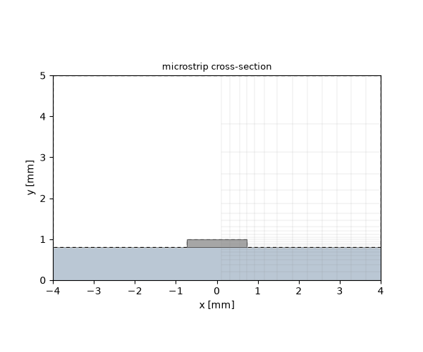
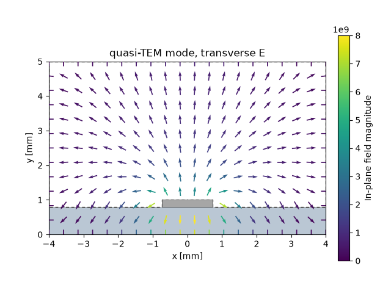
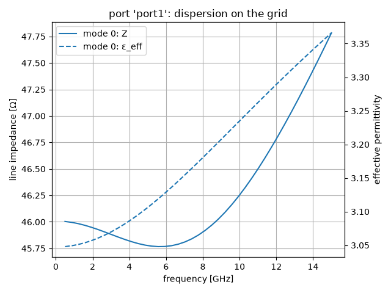
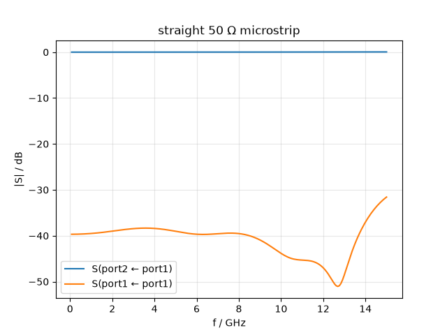
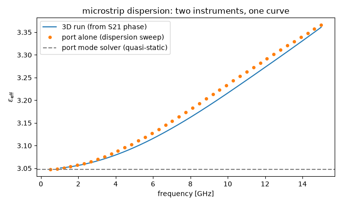

Note
Go to the end to download the full example code.
Microstrip lines: quasi-TEM ports#
The tutorials so far split into two worlds: closed metal pipes (waveguides, tutorial 06/07) and ideal two-conductor lines (coax, tutorials 02–04). This one opens the third and — for most RF work — most important world: printed transmission lines. A microstrip is a flat conductor trace on a dielectric substrate over a ground plane, and its cross-section is inhomogeneous: part of the field travels in the dielectric, part in the air above. That single fact changes the character of the fundamental mode, and this tutorial is about understanding — and measuring — exactly how.
The structure is deliberately plain: a straight 50 Ω line on an FR4-class substrate inside a shielding box. Bends, junctions and components come in the next tutorial; here the line itself is the subject.
Designing the line#
A microstrip is designed on paper first. The classic closed-form synthesis is Hammerstad and Jensen’s: the impedance and effective permittivity of an open microstrip — infinite ground, no lid, no side walls — with a correction for the trace thickness. We use it the way a designer does, solving the width for a 50 Ω line on a 0.8 mm FR4-class substrate (εᵣ = 4.3) with a 0.2 mm thick trace:
import math
import matplotlib.pyplot as plt
import numpy as np
import magnelio as mio
from magnelio import geo, ports
from magnelio.constants import *
h_sub = 0.8e-3 # substrate height
t_strip = 0.2e-3 # trace thickness
eps_r = 4.3
def hammerstad_jensen(w, h, t, eps_r):
"""Open-microstrip (Z0, eps_eff) with the thickness correction."""
u, th = w / h, t / h
du1 = (th / math.pi) * math.log(1 + 4 * math.e / (th / math.tanh(math.sqrt(6.517 * u)) ** 2))
dur = 0.5 * (1 + 1 / math.cosh(math.sqrt(eps_r - 1))) * du1
def z01(u):
f = 6 + (2 * math.pi - 6) * math.exp(-((30.666 / u) ** 0.7528))
return ETA0 / (2 * math.pi) * math.log(f / u + math.sqrt(1 + (2 / u) ** 2))
def eps_eff(u):
a = 1 + math.log((u**4 + (u / 52) ** 2) / (u**4 + 0.432)) / 49
a += math.log(1 + (u / 18.1) ** 3) / 18.7
b = 0.564 * ((eps_r - 0.9) / (eps_r + 3)) ** 0.053
return (eps_r + 1) / 2 + (eps_r - 1) / 2 * (1 + 10 / u) ** (-a * b)
e = eps_eff(u + dur) * (z01(u + du1) / z01(u + dur)) ** 2
return z01(u + dur) / math.sqrt(e), e
lo, hi = 0.5e-3, 3.0e-3 # bisection on the width: Z0 falls with w
for _ in range(50):
mid = 0.5 * (lo + hi)
lo, hi = (mid, hi) if hammerstad_jensen(mid, h_sub, t_strip, eps_r)[0] > 50 else (lo, mid)
w_strip = round(0.5 * (lo + hi), 6)
z_formula, eps_formula = hammerstad_jensen(w_strip, h_sub, t_strip, eps_r)
print(f"design width: {w_strip * 1e3:.3f} mm -> {z_formula:.2f} Ohm, eps_eff {eps_formula:.3f}")
design width: 1.473 mm -> 50.00 Ohm, eps_eff 3.101
The formula answers 1.473 mm. Hold on to its two assumptions — an open line, and a thickness correction calibrated on thin copper foils (our trace is a quarter of the substrate height thick) — because the simulation below will test both.
The geometry: substrate, trace, shield#
Three bricks build the cross-section: the dielectric substrate, the air volume above it with the trace cut out, and the PEC trace itself at the width just designed. Everything sits in a PEC shield box, whose floor doubles as the ground plane — the same hole-in-metal pattern as before, just with two filling materials instead of one.
Two remarks on the box. It is wide and tall enough (side walls more than two trace widths away, lid five substrate heights up) that it disturbs the line only a little — about a Ω, measured further down. And like every closed metal enclosure it has resonances of its own: box modes that would sit on top of the line’s behaviour. The band below stays under the first one — for this cross-section the lowest box mode comes in near 17 GHz, and we stop at 15.
Half the model is enough#
The cross-section is mirror-symmetric about the vertical plane
through the trace centre, and so is the mode we want: the field
pushes straight down from trace to ground, so the transverse field
component across that plane vanishes on it, and the magnetic field
threads through it at right angles. That is exactly a magnetic
wall, and declaring one on the xmin face lets the mesher stop
at the plane and simulate the right half only:
mio.GeometryModel(boundary_conditions={"xmin": "SymmetryPMC"})
The geometry stays as it is — full bricks, centred on the plane. The declaration alone decides how much of it gets meshed, so switching the symmetry off later means deleting one argument, not rebuilding the model. Half the cells means half the memory and roughly half the run time, and it costs nothing in accuracy — if anything the opposite, because the domain now ends exactly at the trace centre, so the discretisation is symmetric about it by construction rather than by luck.
What symmetry does cost is modes. A magnetic wall keeps only the fields that are symmetric about it, so any resonance of the box that happens to be antisymmetric is filtered out of the model entirely — convenient here, where such a mode could only be spurious clutter, but worth remembering whenever a symmetry plane is declared: the structure and the excitation must both respect it.
W_box = 8.0e-3 # shield width
H_box = 5.0e-3 # shield height
L = 20.0e-3 # line length
f_max = 15.0e9
fr4 = mio.Material.from_isotropic(name="FR4", epsilon=eps_r)
substrate = geo.Brick(origin=(-W_box / 2, 0.0, 0.0), size=(W_box, h_sub, L), material=fr4)
air_cap = geo.Brick(origin=(-W_box / 2, h_sub, 0.0), size=(W_box, H_box - h_sub, L), material="air")
strip = geo.Brick(origin=(-w_strip / 2, h_sub, 0.0), size=(w_strip, t_strip, L), material="pec")
model = mio.GeometryModel(boundary_conditions={"xmin": "SymmetryPMC"})
model.add(substrate)
model.add(geo.Difference(air_cap, strip))
model.add(strip)
model.add_port(ports.PortWaveguide(name="port1", plane="zmin", n_modes=1))
model.add_port(ports.PortWaveguide(name="port2", plane="zmax", n_modes=1))
mesh = mio.Mesh.from_geometry(
model,
mio.MeshControl(min_nodes_per_wavelength=25),
f_max=f_max,
)
print(f"grid: {mesh.Nx} x {mesh.Ny} x {mesh.Nz} cells")
fig, ax = model.plot_cross_section("z", L / 2, mesh=mesh, title="microstrip cross-section")

grid: 13 x 23 x 52 cells
The cross-section plot shows the mesher at work on thin layers: the 0.8 mm substrate and the 0.2 mm trace anchor grid planes at their material boundaries, so the y-cells grade from fine around the trace to coarse in the air above — coarse at the air wavelength: the bulk cell size is set per slab by the densest material in it, so the substrate does not dictate the mesh of the air above it. Nobody meshed this by hand — the geometry is the meshing instruction. It also shows the symmetry plane doing its work: the drawn structure still spans the full width, but the grid covers only the right half of it.
The quasi-TEM mode#
In a coax, air everywhere, the fundamental mode is exactly TEM and its impedance is a closed formula. Here no exact TEM mode exists: the field would have to travel at two different speeds at once, in the substrate and in the air. The physical fundamental is quasi-TEM — almost transverse, zero cut-off, but with its properties set by a weighted compromise between the two dielectrics. There is no textbook formula for that compromise; the port solves the 2D cross-section problem numerically, before any time stepping:
analysis = mio.AnalysisScatteringTD(mesh=mesh, verbose=False)
report = analysis.solve_ports()["port1"]
print(report)
qtem = report.modes[0]
eps_eff_static = (C0 * qtem.gamma(10e9).imag / (2 * np.pi * 10e9)) ** 2
print(f"eps_eff (quasi-static): {eps_eff_static:.3f}")
Port 'port1' — 1 mode(s)
cut by symmetry plane(s) xmin (PMC) — impedances are full-model values
z_line = 46.01 Ω (quasi-static, on this grid)
[0] QTEM_lap00 TEM f_c = 0.0000 GHz z_line = 46.01 Ω ε_eff = 3.047 termination = mur (chain spread 3.1e-01)
eps_eff (quasi-static): 3.047
Two numbers to hold on to, and a label to read carefully. The line impedance comes out at 46.0 Ω — eight percent below the 50 Ω the formula designed. Do not be alarmed, and do not reach for the trace width yet: read the label.
It says quasi-static, on this grid, and both halves matter. On this grid: the port solves its mode on the port-plane slice of the 3D mesh you just built — the same cells, the same conformal material averages — so this is the impedance of the cross-section as this grid resolves it, not a converged value. At 25 nodes per wavelength the trace is four cells wide, and the field singularities at its four edges are what the grid resolves worst; the section after next converges the number and shows how much of the eight percent is the grid’s. Quasi-static: it is the impedance of the frequency-flat mode the port operates with, the static limit of a line that in truth disperses (the next section shows what the grid carries at each frequency).
Note what the report says above the numbers: the port window is cut by the symmetry plane, and the impedance is reported for the full model. On the meshed half the mode solver actually measures twice that value, since half a trace over half a ground plane holds half the capacitance; the two halves sit in parallel, and the port does that bookkeeping so the number on screen is the one the physical line has.
And the effective permittivity is 2.99: between air (1) and substrate (4.3), the exact weighting of the field’s split residence. The mode profile shows that split directly — the field crowds into the substrate under the trace, with a fringing skirt in the air. It is drawn across the full width: only half of it was solved, and the mirror image is filled in for the picture.
fig, ax = qtem.plot(geometry=model)
ax.set_title("quasi-TEM mode, transverse E")

Text(0.5, 1.0, 'quasi-TEM mode, transverse E')
What the port carries at each frequency#
The port operates with one frozen mode, but the report can solve the modes the grid actually carries at any frequency — the true discrete eigenmodes of the feed cross-section — and hand back their impedance, effective permittivity and propagation constant as curves. No 3D run is involved; this is the port alone:
f_sweep = np.linspace(0.5e9, f_max, 41)
disp = report.dispersion(f_sweep)
print(disp)
fig, ax = disp.plot()
fig.tight_layout()
for f_probe in (5e9, 10e9, 15e9):
k = int(np.argmin(np.abs(f_sweep - f_probe)))
print(
f"{f_probe / 1e9:4.0f} GHz: Z = {disp.z_line[0, k]:.2f} Ω, "
f"eps_eff = {disp.epsilon_eff[0, k]:.3f}, beta = {disp.beta[0, k]:.1f} rad/m"
)

Port 'port1' — dispersion of 1 mode(s)
[0]
0.5000 GHz z_line = 46.004 Ω ε_eff = 3.0480 β = 18.30 rad/m
7.7500 GHz z_line = 45.875 Ω ε_eff = 3.1737 β = 289.51 rad/m
15.0000 GHz z_line = 47.784 Ω ε_eff = 3.3660 β = 577.96 rad/m
5 GHz: Z = 45.78 Ω, eps_eff = 3.103, beta = 179.1 rad/m
10 GHz: Z = 46.24 Ω, eps_eff = 3.233, beta = 374.3 rad/m
15 GHz: Z = 47.78 Ω, eps_eff = 3.366, beta = 578.0 rad/m
This is the microstrip’s signature: as frequency rises the field retreats into the substrate, ε_eff walks from the quasi-static 3.05 toward εᵣ — 3.37 at 15 GHz, a 10 % move across the band, right in the range the classical dispersion models of the Getsinger family predict for this geometry — and the impedance moves with it, from 46 Ω to about 48 Ω. The impedance is the power–current definition of the true mode (power through the port plane over the square of the strip current), which meets the quasi-static value in the static limit; on a homogeneous line the curve would be flat. This is the practical reason quasi-static design formulas come with frequency disclaimers: the line the formulas describe at 1 GHz is measurably electrically longer at 15.
How good is 46 Ω? Converging the port plane#
Everything so far is exact for this grid. The question a designer
asks next is how far the grid is from the cross-section itself — and
whether the paper design was right. Refining the whole 3D mesh to
find out costs eightfold per halving; refine_port_modes converges
the cross-section on a thin slab behind the port instead, starting
from this very grid (level 0 reproduces the 46.0 Ω) and splitting
every cell of the port plane in four per level, until the change
between levels falls below tol:
ladder = ports.refine_port_modes(
model, mio.MeshControl(min_nodes_per_wavelength=25), mesh, "port1", levels=3
)
print(ladder)
Port 'port1' — z_line of mode 0 under port-plane refinement (not converged at tol 1.0e-03)
level 0: 299 plane cells 46.0082 Ω
level 1: 1196 plane cells 48.7687 Ω Δ +5.660 %
level 2: 4784 plane cells 50.1695 Ω Δ +2.792 %
extrapolated: 51.6128 Ω, observed order 0.98
The ladder climbs: 46.0, 48.8, 50.2 Ω and an extrapolated value of about 51.5 Ω, at first order — the field singularities at the strip’s edges set the rate, and a fourth and fifth rung (not run here) reach 50.9 and 51.2 Ω. So the grid’s 46 Ω was the grid’s number: the cross-section itself sits within three percent of the paper design. Neither the port’s matching nor the reflection you are about to read could have told you that — a port is matched to its grid — which is why the ladder is the instrument for the impedance and the S-parameters are not.
The remaining three percent is physics, and it is worth taking
apart. The shield costs about 1.2 Ω: rerunning the ladder with the
box twice and four times as large converges at 52.5 and 52.7 Ω, so
the lid and side walls of our box pull the impedance down by that
much, exactly as the open-line formula cannot know. Set against the
open-box 52.7 Ω, the formula’s 50 Ω is then 2.7 Ω low — its thickness
correction over-corrects for a trace this thick (t/h = 0.25 is far
from the thin foils it was fitted on); the thin-trace formula gives
52.1 Ω for this width and lands closer. The two errors happen to
pull in opposite directions here, which is why 50 Ω on paper became
51.5 Ω in the box. Whoever needs 50.0 Ω in this box trims the width
up by about four percent, to 1.53 mm, on the strength of the
ladder — and reruns the ladder to confirm it; tol and levels
set how far it goes, and target="epsilon_eff" converges the
permittivity the same way.
Running the line and reading the S-parameters#
A matched straight line is the simplest possible S-parameter test: everything should go through, nothing should come back.
result = analysis.run(excited=["port1"])
fig, ax = result.plot_s(("port2", "port1"), ("port1", "port1"))
ax.set_title("straight 50 Ω microstrip")
s11 = result.S("port1", "port1")
s21 = result.S("port2", "port1")
print(f"|S21|: min {20 * np.log10(np.abs(s21).min()):.2f} dB")
print(f"|S11|: max {20 * np.log10(np.abs(s11).max()):.1f} dB")

|S21|: min -0.00 dB
|S11|: max -31.6 dB
Transmission hugs 0 dB. The reflection sits near −32 dB at its worst — and it is worth understanding what that number is. It is not a property of the line (a uniform line reflects nothing); it is the residual of the port termination absorbing a dispersive quasi-TEM wave. For exact-TEM lines, tutorial 03 showed floors beyond −100 dB, because there the termination can be made analytically exact. A quasi-TEM mode has no such exact absorber, and the −30 dB class is the honest broadband floor of its termination — background, not physics, and far below anything a real component (or a real connector) will reflect.
Dispersion, cross-checked from the 3D run#
The port’s sweep above came from the cross-section alone. The 3D simulation contains the same physics, and the phase of S21 is the instrument to extract it independently: over a line of length L the mode accumulates φ = −β L, so β — and with it ε_eff = (c₀ β / ω)² — can be read off per frequency and laid over the port’s curve:
f_axis = result.f_axis
phase = np.unwrap(np.angle(s21))
eps_eff_td = (C0 * (-phase) / (2 * np.pi * f_axis * L)) ** 2
sel = f_axis >= 1.0e9 # phase-derived values are 0/0-noisy near DC
fig, ax = plt.subplots(figsize=(7, 4.2))
ax.plot(f_axis[sel] / 1e9, eps_eff_td[sel], label="3D run (from S21 phase)")
ax.plot(f_sweep / 1e9, disp.epsilon_eff[0], "o", ms=4, label="port alone (dispersion sweep)")
ax.axhline(eps_eff_static, color="gray", ls="--", label="port mode solver (quasi-static)")
ax.set_xlabel("frequency [GHz]")
ax.set_ylabel(r"$\varepsilon_\mathrm{eff}$")
ax.legend()
ax.set_title("microstrip dispersion: two instruments, one curve")
fig.tight_layout()
for f_probe in (5e9, 10e9, 15e9):
print(f"eps_eff({f_probe / 1e9:.0f} GHz) = {float(np.interp(f_probe, f_axis, eps_eff_td)):.3f}")

eps_eff(5 GHz) = 3.096
eps_eff(10 GHz) = 3.216
eps_eff(15 GHz) = 3.361
The two instruments agree to about half a percent — the remainder
is the port’s own launch residue, the −30 dB floor above. That
agreement is also what makes de-embedding trustworthy here: result.deembed
shifts the reference planes of a quasi-TEM feed with exactly these
per-frequency modes, so it removes the line’s real dispersion and
not a frequency-flat stand-in.
Reference impedance and renormalisation#
One more thing every S-parameter carries silently: the impedance it is referenced to. Magnelio measures each channel against its port mode’s own impedance — the 46.0 Ω above — which is why a uniform line is matched whatever its impedance came out at. A network analyser reads a device against 50 Ω, and a circuit simulator cascades blocks on a common reference; every result knows its references and can be re-referenced:
print(f"reference impedance of port1: {result.reference_impedance('port1')[0]:.2f} Ω")
result_50 = result.renormalize(50.0)
s11_50 = result_50.S("port1", "port1")
print(f"|S11| against the line's own impedance: {20 * np.log10(np.abs(s11).max()):.1f} dB")
print(f"|S11| re-referenced to 50 Ω: {20 * np.log10(np.abs(s11_50).max()):.1f} dB")
reference impedance of port1: 46.01 Ω
|S11| against the line's own impedance: -31.6 dB
|S11| re-referenced to 50 Ω: -26.1 dB
Against 50 Ω the line reflects −26 dB instead of −32: the mismatch
between 46 Ω and 50 Ω at port 1, exactly what a 50 Ω instrument
would see at this end (only port 1 was excited, so the
renormalisation acts on that one-port; port 2 stays terminated in
its own impedance — excite both to re-reference the full two-port).
And now the ladder pays off a second time: 46 Ω was the grid’s
number and the line is really a 51.5 Ω line, so the −26 dB is a
discretisation artefact, and the mismatch a 50 Ω system will see is
nearer −36 dB. A Touchstone export states the reference in its
option line; result.to_touchstone("line.s2p", z_ref=50)
renormalises on the way out.
Where to go next#
New in this tutorial: a line designed on paper and checked in the solver, an inhomogeneous cross-section built from two dielectrics plus a trace, a symmetry plane that halves the model for free, the quasi-TEM port with its numerically solved impedance and mode profile, the port’s own dispersion sweep and the convergence ladder for its plane, the honest reading of a quasi-TEM termination floor, dispersion cross-checked from the S21 phase, and the reference impedance behind every S-parameter. The next tutorial bends this line around corners and builds a real component out of it — a Wilkinson power divider, including its lumped isolation resistor.
Total running time of the script: (0 minutes 7.185 seconds)